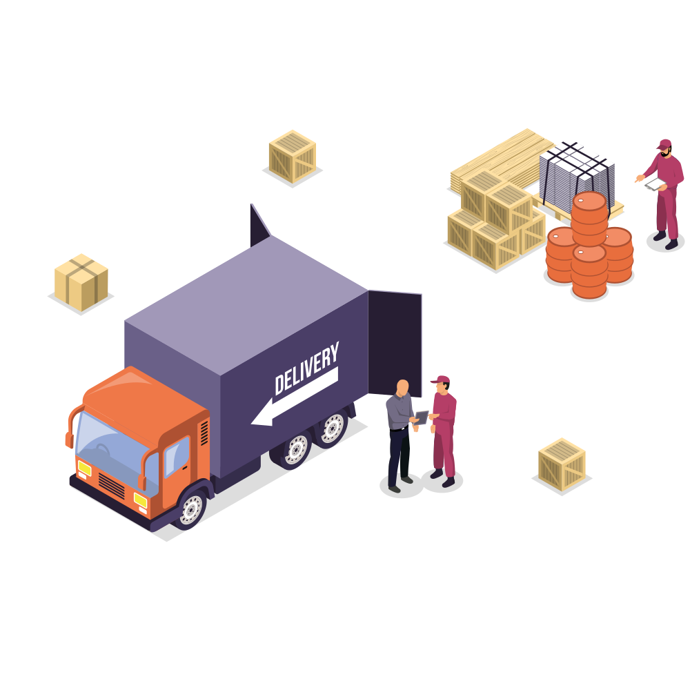
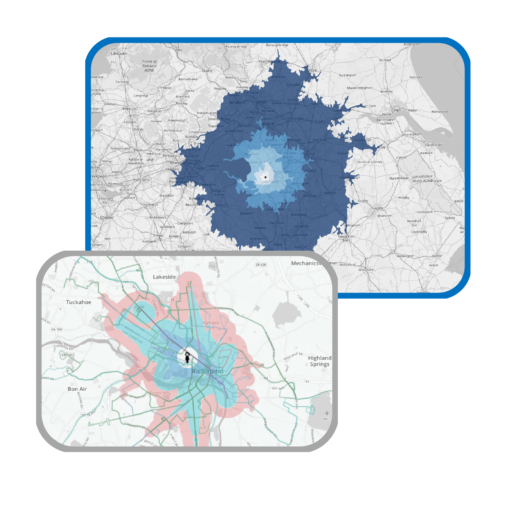
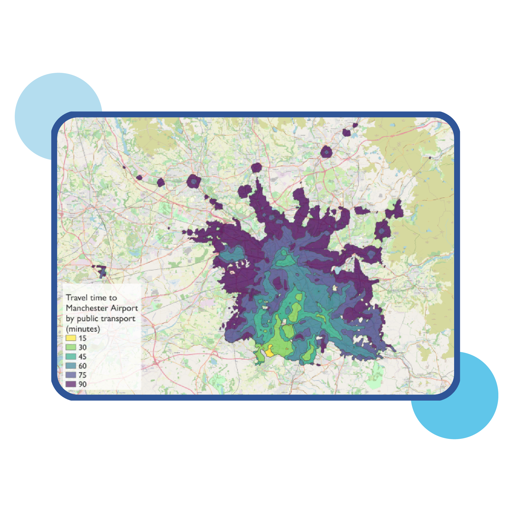

Disminución de Costos
Encuentra el mejor trayecto.
Eficiencia en Tiempo
Conoces en qué están invertidos tus recursos.
Modelo de Rutas
Conoces en qué están invertidos tus recursos.

Seguimiento
Conoces en qué están invertidos tus recursos.
Encuentra el mejor trayecto.
Conoces en qué están invertidos tus recursos.
Conoces en qué están invertidos tus recursos.
Conoces en qué están invertidos tus recursos.
Los datos geoespaciales permiten optimizar las rutas para una mejor experiencia y rentabilidad


Identifica las mejores rutas de desplazamiento para conectar dos puntos o más. Tomando en cuenta datos de distancia, información vial y tiempo.
